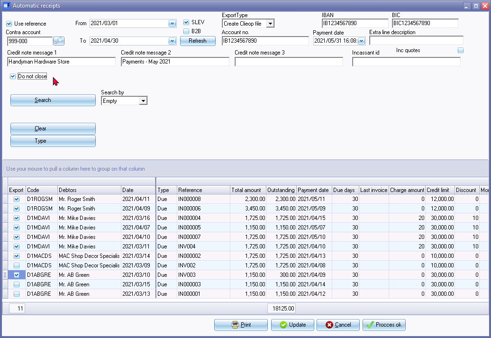
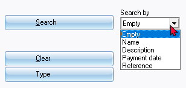
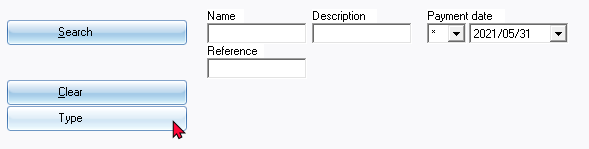
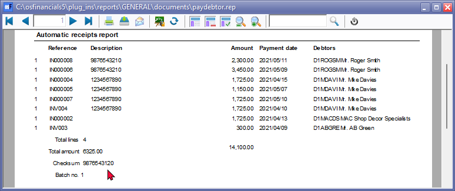
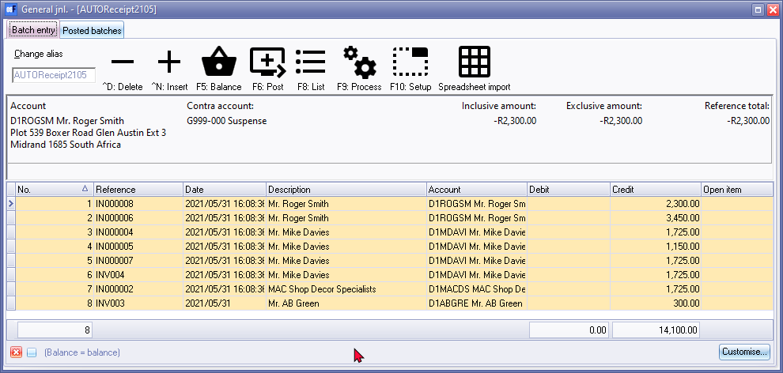
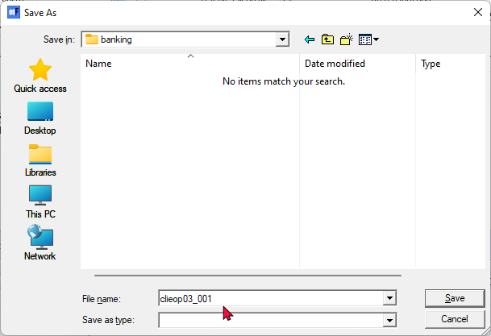
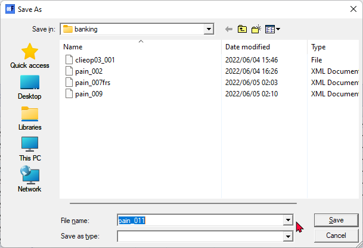
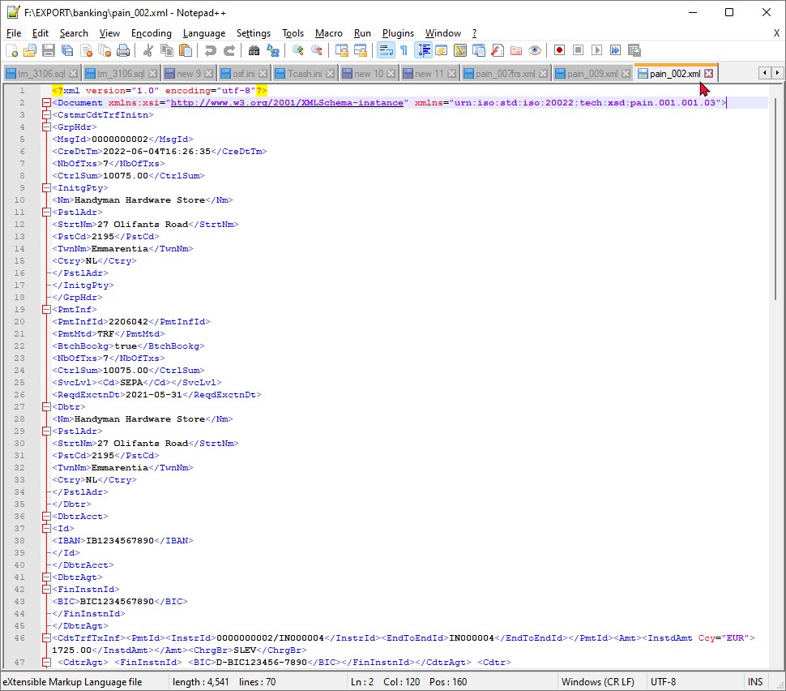
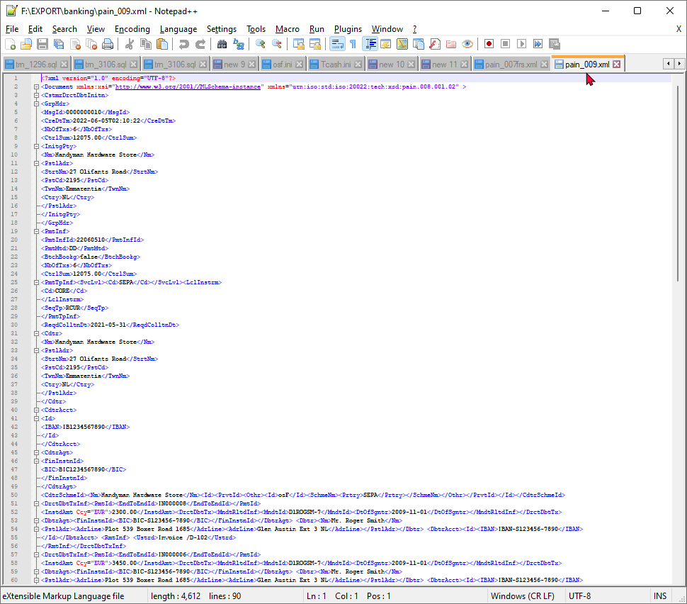

Automatic receipts
You may receive payments from debtor (customer / client) accounts for their accounts via the electronic banking system. The transactions for debtor (customer / client) accounts with outstanding transactions and balances will be transferred into the "Automatic receipts" screen, where you may select the debtor (customer / client) accounts and outstanding amounts you need to receive from the debtor 's Bank accounts.
The debtor (customer / client) accounts which have open or outstanding amounts will be listed. The (outstanding amount) balances are transferred to an intermediate account or clearing account on the date of the transactions.
Once the payment is cleared at the bank (on the due date) payment is received into the Bank account it will appear on the bank statement. When you allocate the transaction on the bank statement, the intermediate account or clearing (account contra account) will be credited.
|
|
Before using this feature, bank account details need to be entered in:
|

To process automatic receipts for debtor (customer / clients):
- On the Default ribbon, select Batch entry (F2).
- Select the General journal or any other batch type.
- Click on the Open button. The "Batch entry" screen for the selected batch will be displayed.
- Enter the Alias (batch name) and press the Enter key.
- Click on the F9: Process icon. The "Process the batch" options screen will be displayed.
- Select the "Automatic receipts" option, and click on the OK button. The "Automatic receipts" screen is displayed:

- The bank account of the Set of Books as entered in Setup → Company information is automatically displayed on this screen.
- Select and enter the following:
- Use reference - Select to use the Invoice reference as entered in the "Your reference" field of the Document entry form.
- Contra account - This is basically a clearing account for the payments received from debtors.
|
|
The contra account needs to be set in the F10:Setup. It is recommended that a general ledger account, which is linked to the Current assets Account group be selected. |

- From - Enter or select the date from which you need to process payments for debtor (customer / client) accounts.
- To - Enter or select the date until which you need to process payments for debtor (customer / client) accounts.
|
|
The transactions for the debtor (customer / client) accounts created on and until the selected dates. After selecting (or reselecting) the dates, click on the Refresh button to update the listed transactions with the date selection. |
- SLEV - To be advised.
- B2B - To be advised.
- Refresh button - This will refresh the data in the "Automatic receipts" screen.
- Export Type - "None" is the default option. This will transfer the selected transactions into the "Batch entry" screen. If you select the following export types you need to save a export file before the selected transactions is transferred into the "Batch entry" screen:
- Create a clieop file - Create an export file.
- pain.001.001.03 - Create an export file in the XML Document type.
- pain.001.001.08 - Create an export file in the XML Document type. To use this export file type, you need to specify a valid "Incassant id" (Collector ID).
These export files contains specific validation and parameters etc. for specific payment systems. These export files will instruct the banks or financial institutions to clear the payments to your debtors (customers / clients).
|
|
See - |
- Account no. - The Bank account of the IBAN number (as entered in Setup → Company information).
- IBAN - (International Bank Account Number) (as entered in Setup → Company information).

|
|
SWIFT - (Society for Worldwide Interbank Financial Telecommunication) - See - http://en.wikipedia.org/wiki/SWIFT / http://www.theswiftcodes.com/ SEPA - (Single Euro Payments Area) - See - http://en.wikipedia.org/wiki/Single_Euro_Payments_Area |
- BIC - (Bank identifier code) (as entered in Setup → Company information).
- Payment date - Enter or select the date for which you need to process payments for debtor (customer / client) accounts.
|
|
The transactions will be generated on this date to the intermediate account or clearing account (Contra Account), and calculate the due days as specified in the "Due days" field on the Accounting information tab of the debtor (customer / client) account. |
- Extra line description - You may enter an extra description to be included in the export file, if required.
- Credit note message 1 - You may enter message to be included in the export file, if required.
- Credit note message 2 - You may enter message to be included in the export file, if required.
- Credit note message 3 - You may enter message to be included in the export file, if required.
- "Incassant id" (Collector ID) - Enter a valid "Incassant id" (Collector ID) in this field. This is required for the "pain.001.001.08" export file type.
- Do not close - By default, this option is not selected. If this option is selected, the Process ok button will be available.
- Search and filter options -


- Check that the payment information and outstanding amounts for each account is correct.
|
|
If you do not wish to include a payment from a debtor at this stage, deselect (remove the tick) the Export field next to the selected debtor. If the "ExportType" field is not selected, no transactions will be generated for the debtor and the debtor will be excluded from the Automatic receipts report". |
- Click on the Print button to generate a "Automatic receipts report" for all accounts with outstanding amounts (balances) for which the receive transaction field was selected.
|
|
If the bank accounts is not entered for a debtor (customer / client) account (on the Accounting information tab, a message similar to this will be displayed. "No bank account for D1ROGSM Mr. Roger Smith |
An example of the printed "Automatic receipts report", is as follows:

- Click on the Update button. If "None" is selected as the "ExportType" option, all debtor (customer / client) accounts with outstanding amounts (balances) for which the receive transaction field was selected, will be imported into the selected batch (journal).
|
|
If "Create a clieop file, pain.001.001.03" or "pain.001.001.08" is selected as the "ExportType" option, a "Save As" screen will be launched, in which the export file needs to be saved. Thereafter, all debtor (customer / client) accounts with outstanding amounts (balances) for which the receive transaction field was selected, will be imported into the selected batch (journal). |

|
|
Once you have finished entering / editing the transactions in the batch you need to: - |
Export type : Clieop file
If the "Create Clieop file" option was selected as the "ExportType" field, the "Save As" screen will be displayed, if you click on the Update button of the "Automatic receipts" screen.

Select the directory in which you need to store the file and specify the name for the file.
Click on the Save button to save and generate the "clieop" export file. An example of the "clieop" export file, is as follows:

Export type : pain.001.001.03
If the "pain.001.001.03" option was selected as the "ExportType" field, the "Save As" screen will be displayed, (after the "Automatic receipts report" is printed) if you click on the Update button of the "Automatic receipts" screen.

Click on the Save button. This will create an XML Document file type for the "pain.001.001.03" "ExportType".
|
|
The export file name will be generated as "pain_002", etc. These numbers indicate the version number of the file export. |
An example of the "pain.001.001.03" export file, is as follows:

Export type : pain.001.001.08
|
|
To use the "pain.001.001.08" "ExportType" option, you need to specify a valid "Incassant id" (Collector ID) on the "Automatic receipts" screen. If no valid id, is specified, an error message, similar to the following; will be displayed. "U heeft geen incassant id opgegeven!" |
If the "pain.001.001.08" option was selected as the "ExportType" field, the "Save As" screen will be displayed (after the "Automatic receipts report" is printed), if you click on the Update button of the "Automatic receipts" screen.
Click on the Save button. This will create an XML Document file type for the "pain.001.001.08" "ExportType".
|
|
The export file name will be generated as "pain_009", "pain_011, etc. These numbers indicate the version number of the file export. |
An example of the "pain.001.001.08" export file, is as follows:
